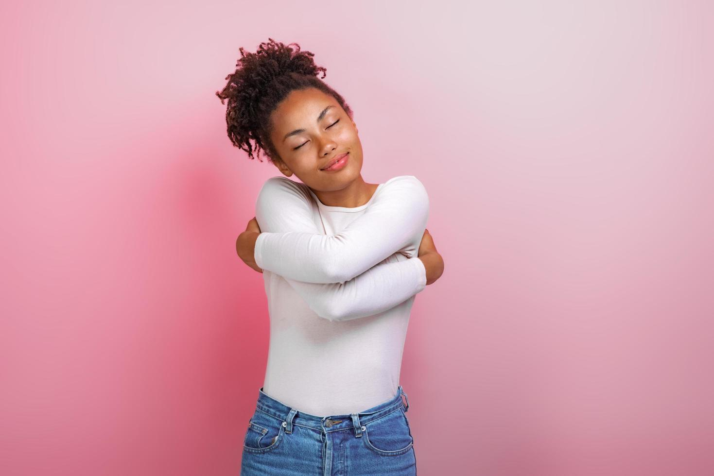

Primeiros Relacionamentos e os Autolimites Emocionais
A forma como construímos nossas emoções e entendemos os vínculos afetivos tem raízes profundas nas experiências da infância. Este artigo explora como os padrões de relacionamento aprendidos nos primeiros anos de vida podem influenciar a percepção de amor e dor na vida adulta, destacando a importância do autoconhecimento para a definição de limites saudáveis e a ruptura do ciclo da violência.
A Origem dos Padrões Emocionais: Amor, Dor e o Ciclo da Violência
O processo de formação dos padrões emocionais que carregamos ao longo da vida advém das experiências que vivenciamos. Imagine que passamos por uma situação e, dependendo da forma como a interpretamos, podemos entendê-la como uma possível fonte de amor, ainda que de maneira distorcida.
Vamos pensar no seguinte exemplo: durante toda a infância, Fabi foi uma criança que recebia muitas palmadas dos pais sempre que não estudava, não arrumava o quarto ou desobedecia. Os pais de Fabi diziam que batiam nela porque a amavam e queriam o melhor para ela. Assim, Fabi aprendeu que o amor, de certa forma, vem acompanhado da dor, seja ela física ou psicológica. Os gritos, as broncas e as punições passaram a ser compreendidos por ela como expressões de afeto.
Fabi, então, absorveu esse padrão e passou a reproduzi-lo em seus relacionamentos, sejam eles amorosos, familiares ou de amizade. Em seu repertório emocional, ela entende que é assim que se demonstra amor. Por isso, tem dificuldade em reconhecer quando uma relação é abusiva, já que, para ela, o amor se manifesta por meio da violência, seja ela física ou psicológica. Desse modo, as primeiras experiências afetivas são fundamentais para o desenvolvimento cognitivo e comportamental saudável de uma pessoa, seja ela vítima ou agressora. Afinal, quem agride, muitas vezes, também aprendeu a se relacionar a partir da dor e da violência.
Autoconhecimento e a Ruptura do Padrão: Impondo Limites
Mas sempre existe a possibilidade de conhecermos novas realidades e novas formas de ser e estar no mundo. Talvez Fabi tenha assistido a um filme, lido um livro ou conhecido pessoas que demonstram o amor de maneira diferente, pessoas que conseguiram interromper esse ciclo. Esses encontros podem despertar nela o desejo de compreender melhor o que entende por amor, quais são seus verdadeiros gostos e, principalmente, quais são seus limites nas relações.
O autoconhecimento oferece ferramentas valiosas para aprendermos a mostrar aos outros até onde podem ir, e também para reconhecermos nossos próprios gatilhos, pontos de atenção e formas de querer ser amados(as). Já os sinais emocionais de que uma relação pode estar se tornando abusiva surgem por meio do autoconhecimento e da auto-observação de quem vive o abuso, ou de pessoas próximas que percebem mudanças de comportamento. Alguém que antes apresentava boa qualidade de vida pode, após vivenciar uma situação de violência, demonstrar baixa autoestima, culpa, vergonha e outros sinais de sofrimento emocional.
Violência de Gênero e o Caminho para Relações de Respeito
A Cartilha de Referências Técnicas para Atuação de Psicólogas(as) no Atendimento às Mulheres em Situação de Violência traz uma reflexão importante:
"Assim, compreendemos as situações de violência como expressões das relações desiguais de gênero que atravessam a experiência das mulheres, embora, para os operadores jurídicos, os tipificadores de violências (ex.: física, psicológica, patrimonial) sejam considerados, em certa medida, como institutos distintos e cartesianos."
A violência contra a mulher está profundamente enraizada em nossa estrutura social, sendo reflexo das desigualdades de poder entre homens e mulheres, em que o gênero masculino historicamente ocupa posição de dominação sobre o feminino.
Essas desigualdades aparecem no cotidiano das mulheres, desde pequenas desvalorizações até formas mais graves de violência, e podem se manifestar não apenas em relacionamentos afetivos, mas também em vínculos familiares, sociais e profissionais.
Saber impor limites aos filhos, oferecer suporte emocional, escuta ativa e, acima de tudo, presença genuína em sua rotina contribui para a construção de relações baseadas na liberdade, na reciprocidade e no respeito.
Em suma, a trajetória emocional de um indivíduo é determinada pela qualidade de seus primeiros vínculos afetivos. O resgate da autonomia e a construção de relações baseadas no respeito mútuo são possíveis através do autoconhecimento e da coragem de romper padrões herdados. O desafio social reside em fomentar, desde a infância, ambientes que ensinem que o amor é sinônimo de liberdade e dignidade, e não de violência ou dominação.
Sobre a Autora
Fernanda Matouk Ribeiro é Administradora e Psicóloga, CRP 05/83991, com formação em andamento em Terapia Cognitivo Comportamental (TCC). Possui experiência na área clínica, avaliação psicológica, orientação profissional e de carreira e em pesquisa com foco em Neuropsicologia. Possui experiência na área de Recursos Humanos com foco em Recrutamento e Seleção e Treinamento e Desenvolvimento.